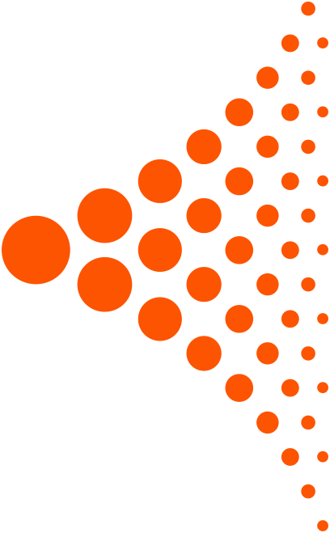

Agenda
Mensalistas com horário fixo, aulas e avulsos no mesmo grid, com bloqueios em lote e status por cor.

O sistema mais completo do mercado para arenas de esportes de raquete. Agenda, PDV, aulas, financeiro, estoque, fiscal e torneios — tudo integrado, do jeito que um gestor precisa.
O Triio unifica as principais frentes da sua arena em um único sistema. Passe o cursor em cada bolinha — ou toque nela, no celular — para ver o que ela faz.
Agendamento de quadras, gestão de aulas, professores, mensalistas e controle de frequência. Tudo organizado, sem conflitos.
Bar, lojinha e pedidos de cozinha integrados ao caixa. Mais agilidade no atendimento e melhor experiência para o cliente.
Fluxo de caixa, contas a pagar e receber, relatórios e indicadores em tempo real. Visão completa da saúde financeira da arena.
Emissão fiscal integrada e TEF para pagamentos com cartão. Conformidade e segurança para a sua operação.
Controle de estoque, compras e fornecedores de forma inteligente. Evite desperdícios e tenha sempre o que precisa, na hora certa.
Planilha para o financeiro, caderno para o bar, aplicativo só para reserva e o contador cobrando as notas. O Triio junta tudo isso em uma operação única.
Área do gestor completa e um app web para o jogador reservar sozinho, sem depender da recepção.
Mensalistas com horário fixo, aulas e avulsos no mesmo grid, com bloqueios em lote e status por cor.
Turmas, professores e frequência controlados sem lista paralela no papel.
Venda no balcão ou na comanda da quadra, com preço, margem e baixa de estoque na hora.
O pedido sai do atendimento e chega organizado na cozinha, sem grito e sem comanda perdida.
Abertura, sangria, conferência por forma de pagamento e fechamento de turno em minutos.
Contas a pagar e a receber, relatórios e o resultado real da arena, mês a mês.
Entradas, perdas e custo médio para você saber para onde a margem está indo.
NFC-e, NFS-e e TEF para cartão, direto do sistema, batendo com o financeiro.
Ocupação por horário, ticket médio e comparativo entre períodos.
Pontos e benefícios para o cliente voltar mais vezes na semana.
Controle de produtos em consignação com fornecedores e parceiros.
O cliente reserva sozinho, paga via Pix antecipado ou no local e vê seu histórico.
Monte grupos, chaveamento e mata-mata direto no Triio. Inscrição das duplas, tabela sempre atualizada e resultado visível para todo mundo acompanhar — sem depender de print de planilha.
Padel, tênis, beach tênis e pickleball rodando na mesma plataforma em todo o país.
Os estados em laranja já têm arenas usando o Triio no dia a dia. Passe o cursor sobre um bloco para ver o nome do estado.
Dois minutos assistindo explicam melhor do que dez parágrafos lendo.
Depoimento — Mais Sports, arena parceira Triio
Reel — bastidores e novidades do Triio
Depoimentos de donos e gestores de arena que trocaram a planilha pelo Triio.
Com o Triio, reduzi em 80% meu tempo de gestão e aumentei minha receita. O sistema é completo.
A agenda por cores mudou o dia a dia da recepção. Ninguém mais reserva horário em cima do outro.
Tenho duas unidades e acompanho o resultado das duas no mesmo painel, sem pedir relatório para ninguém.
O consumo cai direto na comanda da quadra. O cliente fecha tudo de uma vez e o caixa bate no fim da noite.
Descobri produtos que eu vendia com margem quase zero. Ajustei o preço e a lojinha virou lucro de verdade.
Emitir nota deixou de ser um problema de fim de mês. Sai na hora da venda e o contador não reclama mais.
Migrar o fiscal para dentro do sistema economizou umas seis horas por mês da minha equipe.
Chamei no domingo às 21h com a quadra cheia e fui atendido na hora. Esse suporte 24h vale o contrato sozinho.
Time atencioso e que entende de arena, não só de software. Responde rápido e resolve.
Atendimento humano 24 horas por dia, 7 dias por semana, pelo WhatsApp. Quadra cheia com problema no caixa é urgência — e a gente trata como urgência.
Chamar o suporteDemonstração sem compromisso, implantação acompanhada e contrato sem fidelidade.
Estamos sempre em busca de gente boa para ajudar a levar o Triio a mais arenas pelo Brasil. Se você curte tecnologia e esporte, queremos te conhecer.
Manda seu currículo direto pelo WhatsApp ou e-mail e conte um pouco sobre você.
Enviar currículo contato@triio.com.br